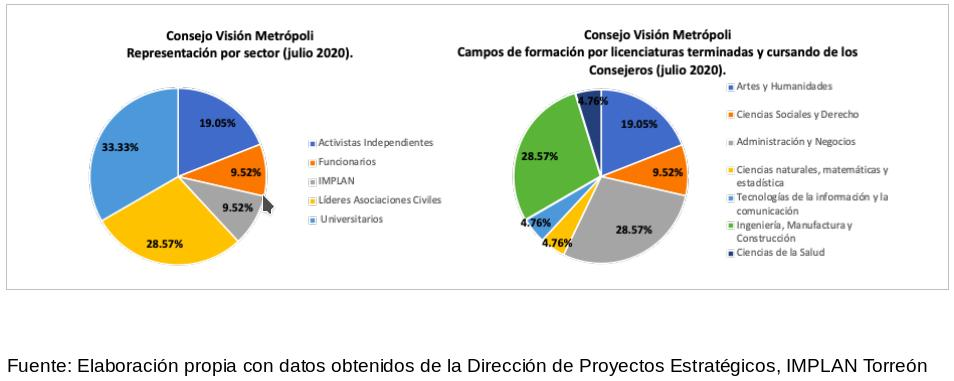
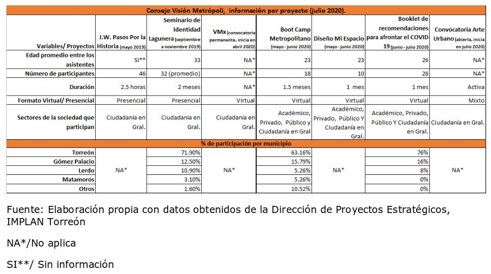

Desde la integración del Plan Estratégico para Torreón, con enfoque Metropolitano, TRC 2040; una de las propuestas de la ciudadanía, dentro de los 364 proyectos de la cartera; en el tema de Buen Gobierno; hacía énfasis en el diseño de mecanismos de participación ciudadana.
Así, en febrero de 2019, el IMPLAN Torreón a través de la Dirección de Proyectos Estratégicos, incorpora en su estructura, una plataforma de participación juvenil permanente, el Consejo Visión Metrópoli.
Conformado por 21 jóvenes de la Zona Metropolitana de La Laguna, con un amplio currículo social; los objetivos del Consejo están dirigidos a consolidar liderazgos sociales; a formalizar espacios de participación; a fomentar la comunicación de la juventud con diversos sectores y aprovechar la visión joven en acciones con impacto social. Sobre la marcha, hemos descubierto que el Consejo también ha servido como un espacio para la instrucción de funcionarios jóvenes o aquellos que buscan serlo.
Actualmente Visión Metrópoli, agrupa sus proyectos de manera flexible en 4 temáticas, consideradas, por los Consejeros, como las de mayor urgencia en la región: Salud Mental, Movilidad, Gobernanza y Medio Ambiente; que aunque algunas iguales y otras diferentes a los ejes de trabajo del IMPLAN Torreón; complementan, y contribuyen en el corto y mediano plazo, en los planes y programas del Instituto.
El sello de la formación académica de los que colaboramos en el Consejo, es otro elemento que nos da forma. Por ejemplo, a nivel licenciatura (cursando o terminada), nuestros perfiles se agrupan en su mayoría en los campos de formación de Ingeniería, Manufactura y Construcción, y Administración y Negocios. Entre las carreras: Arquitectura, Ingeniería Civil, Diseño Industrial y Finanzas.
A casi un año y medio de haber tomado protesta e instalar labores, el Consejo ha recibido 37 postulaciones para nuevos consejeros; ha llevado a cabo 18 sesiones ordinarias, más de 10 extraordinarias y 27 proyectos propuestos (ejecutados y/o en proceso).
Algunos de los proyectos más destacados en 2019:
Jane’s Walk “Pasos por la Historia”. Caminata interactiva por el Centro Histórico de Torreón, parte del movimiento inspirado por la activista Jane Jacobs. Seminario de Identidad Lagunera. 7 sesiones teóricas pero a la vez prácticas, donde se exploraron diversas dimensiones de lo que nos hace ser.
Las actividades en 2020:
VMx. Espacio dedicado a compartir conocimiento de expertos en temas de gran relevancia para los ciudadanos de La Laguna, a través de conferencias virtuales.
Boot Camp Metropolitano. Espacio de asesoría para la fundamentación, estructura y presentación de proyectos a las administraciones de la ZML, a través de la Metodología del Marco Lógico, MML.
Diseño Mi Espacio. Concurso de mobiliario modular para estudiar y/o trabajar en casa ante la situación de pandemia.
Booklet de recomendaciones para afrontar el COVID-19. Recopilación de las propuestas de Diseño Mi Espacio, así como ideas para afrontar la pandemia.
Convocatoria Arte Urbano en La Laguna. Actividad que invita a la comunidad a documentar el graffiti y arte urbano en la región.
Colaboración en el Programa Zona Norte de Torreón. Dentro de las actividades de planeación participativa, en las mesas de diálogo para la identificación de problemáticas.
Iniciativas que han tenido eco en Sabor a Mí, Peñoles, Dirección de Atención a la Juventud de Torreón, Dirección de Cultura, Archivo Municipal, Biodiversa, Pro defensa del Nazas, Planetarium, Universidad La Salle Laguna (ULSA), Comunidad de Instituciones de Educación Superior de La Laguna (CIESLAG), Casa Juárez y grandes profesionales y expertos en las áreas de Arquitectura, Diseño, Artes Plásticas, Música, Letras, Deporte y Gastronomía, de nuestra región.
A manera de concluir, que lo que venga para el Consejo Visión Metrópoli sea un gran aprendizaje de cómo organizarnos en nuestra comunidad. Para los próximos funcionarios, profesionistas, empresarios, activistas, que forman parte o no, del Consejo; que podamos pertenecer más que estar. Y que los retos que tengamos que afrontar juntos en La Laguna, sean de todo, menos de cómo trabajar unidos.


Acerca del Autor
Frida García Gutiérrez es Licenciada en Administración Financiera por el Instituto Tecnológico y de Estudios Superiores de Monterrey, ITESM Campus Laguna; egresada con las distinciones en Economía e Impuestos. Cuenta con los diplomados en Evaluación y Formulación Socio económica de Proyectos; por la SHCP; y Asociaciones Público Privadas, por el ITESM.
Ha sido colaboradora en Crowe Horwath Gossler, firma dedicada a la asesoría contable, fiscal y financiera. Desde el 2017, forma parte del equipo técnico del Instituto Municipal de Planeación y Competitividad de Torreón, IMPLAN Torreón; donde actualmente es Directora de Proyectos Estratégicos; y forma parte del Consejo Visión Metrópoli como Secretaria Técnica.